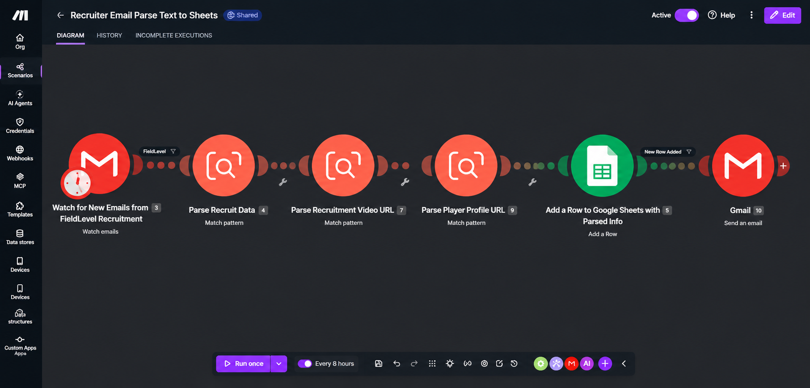

The Problem
Creating customer profiles required multiple manual steps, including gathering information, organizing data and entering information into internal systems.
The Goal
Create a more scalable process that reduced repetitive manual work while maintaining data quality and accuracy.
My Role
Operational workflow design, testing, QA, implementation feedback and coordination between business requirements and the automation process.
Business Problem
Customer profile creation involved a significant amount of manual research, organization and data entry. As the business grew, continuing to build profiles entirely through a manual process would make onboarding increasingly time-consuming and difficult to scale.
The challenge was not simply to automate individual tasks. The process needed to maintain the structure and quality required by the business while reducing repetitive work.
Objective
The objective was to develop a more efficient profile-building workflow that could gather available information, organize it into a consistent structure and move validated information into the company's internal systems.
The new process also needed operational controls so that information could be reviewed and corrected before being used.
Workflow
My Role
My role focused on the operational side of developing and implementing the workflow. I worked with an AI automation specialist to translate the existing profile-building process into requirements that could be automated.
I participated in testing the Profile Builder, reviewing outputs, identifying workflow issues and providing implementation feedback.
This included evaluating whether information was being structured correctly, identifying areas where manual review was still necessary and helping refine the process to improve accuracy and usability.
How I Approached the Project
1. Understand the Existing Process
Reviewed the manual profile-building workflow to identify repetitive tasks, required information and areas where automation could provide the most value.
2. Define Operational Requirements
Helped determine how profile information needed to be structured and what information required validation before entering internal systems.
3. Test the Workflow
Tested automated outputs against expected results and identified inconsistencies, missing information and workflow issues.
4. Refine the Process
Provided feedback and worked through iterations to improve accuracy, usability and overall process efficiency.
Project Visual
This Make.com automation monitors incoming recruitment emails, parses recruiting information and player links, adds the structured data to Google Sheets, and sends an automated email response.

Tools & Methods
Challenges & Problem Solving
One of the most important parts of the project was determining where automation should end and human review should begin. Automated collection can improve speed, but profile information still needs to meet business standards before being used.
Testing therefore focused not only on whether the automation worked technically, but whether the output was useful and accurate from an operational perspective.
The workflow was refined through testing, feedback and iteration rather than treating automation as a one-time implementation.
Business Value
- Reduced reliance on repetitive manual profile data entry.
- Created a more structured and repeatable profile-building process.
- Improved the ability to scale customer onboarding.
- Added validation and QA into the automation workflow.
- Created a stronger connection between operational requirements and the technology used to support them.
Skills Demonstrated
Skills Demonstrated
← Back to Projects